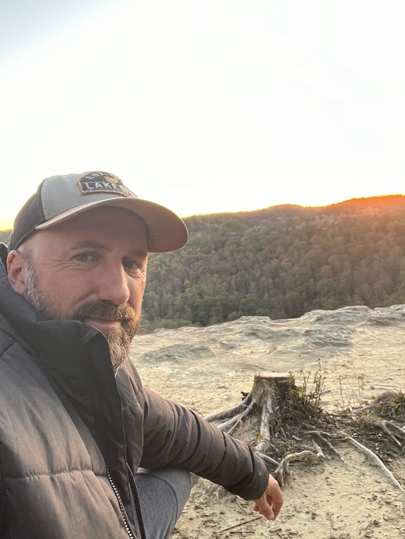

For over twenty years I've worked on a single question: how do we build systems that genuinely improve people's lives — and how do we know it's working?
The defining trait of that work takes shape in community. My university, my classroom, my church, my family, my business, my apps, and the teams I coach. Different arenas, same work: figure out what actually helps people, then build the system that makes it repeatable. Discovering things as I go, and sharing wisdom along the way.